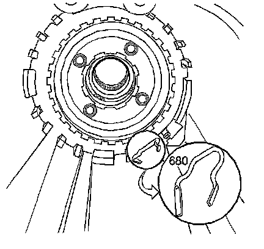

Output Shaft, Reaction Gear, Low/Rev Clutch Removal
Output Shaft, Reaction Gear, Low/Rev Clutch Removal
Tools Required
J 29837-A Output Shaft Support Fixture
1. Remove the reaction sun gear (673) and the thrust washer (674).

2. Remove the low and reverse support retainer ring (676).
3. Remove the J 29837-A.
4. Push on the output shaft (687) in order to loosen the low and reverse clutch support (679).
5. Remove the low and reverse clutch support (679).
6. Remove the output shaft (687).

7. Remove the low and reverse clutch support retainer spring (680).
Important: The reaction carrier assembly (681) can be a 4 or 5 pinion design depending on the transmission model.
8. Remove the reaction carrier assembly (681).
9. Remove the following components:
1. The low and reverse clutch fiber plate assembly (682C)
2. The low and reverse clutch steel plates (682D)
3. The low and reverse clutch selective plate (682B)
4. The low and reverse clutch waved plate (682A)
10. Remove the following components:
1. The thrust bearing assembly (reaction carrier support) (683)
2. The internal reaction gear (684) and the internal reaction gear support (685)
3. The reaction gear support bearing (692)